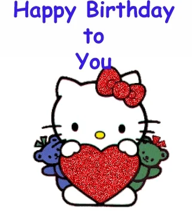

I remember that one day you told me that you loved writing letters and including them in gifts to people, but you’ve never received any letter back to you, which sucks, isn’t? Such an archaic, yet simple and sweet concept of providing written words in a well-designed letter seems to be fading away, as celebrations become part of mundane things rather something unique and meaningful.
But worry not, as I intend to make your dreams of seeing a letter addressed to you – come true and finally make your birthday unique :3.
→
I’ve never really bothered to gift things to people in my life, as I’ve never had so many people that I actually cared for and have so much bond with. Celebrations and birthdays of anybody I knew were always about attending, wishing the good things to that person and just spend time there. Gifts were optional at least for me, because gifting anything that wasn’t money was just useless. As you know, I’m still young in my life and I can’t really throw money at people anytime I want :p.
Anybody that I cared for deeply were always happy to see me at any time, with or without gifts, doesn’t really matter. It was always about spending a good portion of time with them, recognize our importance in each other’s lives and have fun in the end.
The question of whether or not I should gift something depends on the person. Someone would just enjoy my company without brining any gifts, but somebody just deserved something that had so much effort put into, showing that you actually respect and love the companionship with that said person.
←
→
And so you’re one of these people that I would give something to show how important you’re to me. :3
I love you. I wouldn’t utter that word to anybody else, but you. I’d never imagine myself saying it to somebody who used to be a complete stranger for me a few weeks ago, yet alone write paragraphs of texts to that said person as a letter, but here we’re.
You’ve showed me your compassion and care that I yearned for unknowingly all of my life, wandering empty, not knowing what the hell I deserve in this life, tormented by being alone, secluded from any sources of intimate care until I met you.
You’ve showed the ways I should’ve got through years ago, but never did, because I was robbed of such opportunity. My sense for love was deeply deformed in the process, left to rot, but you’ve reshaped it and showed me it in various ways. And I absolutely loved every bit of it.
Thank you. I know I shouldn’t say it, but I can’t otherwise let you know that you’ve helped me. I love you and wish you everything what YOU want and DESIRE for.
xoxo, your lovely catboy :3.

←